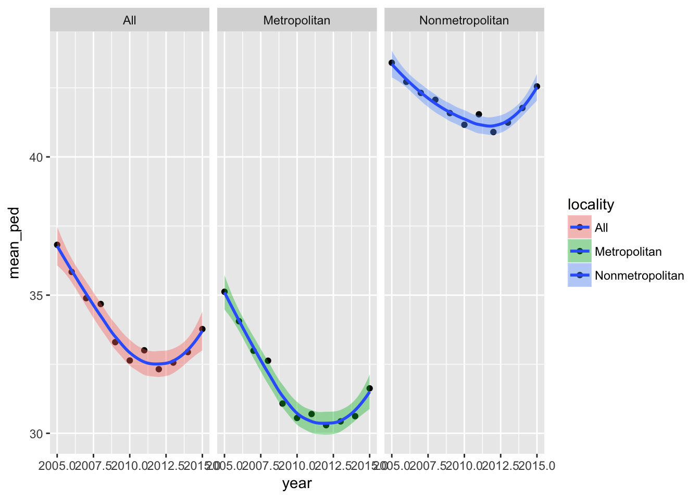

p8105_final_project
Yulan Zhang
November 2, 2017
cod_data = read_csv("./data/NCHS_-_Potentially_Excess_Deaths_from_the_Five_Leading_Causes_of_Death.csv") %>%
clean_names() %>%
na.omit() %>%
filter(!(state == "United States")) %>%
separate(., percent_potentially_excess_deaths, into = c("percent_excess_death"), sep = "%") %>%
mutate(percent_excess_death = as.numeric(percent_excess_death), mortality = observed_deaths/population * 10000, mortality = as.numeric(mortality)) %>%
select(year, cause_of_death, state, locality, observed_deaths, population, expected_deaths, potentially_excess_deaths, percent_excess_death, mortality)## Parsed with column specification:
## cols(
## Year = col_integer(),
## `Cause of Death` = col_character(),
## State = col_character(),
## `State FIPS Code` = col_character(),
## `HHS Region` = col_integer(),
## `Age Range` = col_character(),
## Benchmark = col_character(),
## Locality = col_character(),
## `Observed Deaths` = col_integer(),
## Population = col_integer(),
## `Expected Deaths` = col_integer(),
## `Potentially Excess Deaths` = col_integer(),
## `Percent Potentially Excess Deaths` = col_character()
## )## Warning: Too many values at 191748 locations: 1, 2, 3, 4, 5, 6, 7, 8, 9,
## 10, 11, 12, 13, 14, 15, 16, 17, 18, 19, 20, ...##columns removed
#"state_fips_code" "hhs_region" "age_range" "benchmark" "potentially_excess_deaths" "percent_excess_death" "mortality" - the
yearvariable contains data collected from 2005-2015. - filtered out
United Statesin thestatevariable. - Added a variable
mortalitywhich is calculated by observed_deaths/population * 10000. This variable indicates the number of deathes observed in every 10000 people in the three geographic regions:Metropolitan,NonmetropolitanandAll.
xs2329: This bar graph shows the distribution of cause of death within mortality in the three geographic regions: Metropolitan, Nonmetropolitan and All.
cod_data %>%
group_by(cause_of_death) %>%
ggplot(aes(x = locality, y = mortality, fill = cause_of_death)) +
geom_col() +
theme(axis.text.x = element_text(angle = 45, hjust = 1)) +
labs(title="Locality vs. Mortality") +
labs(x="locality", y="mortality") 
cod_data %>%
group_by(cause_of_death) %>%
ggplot(aes(x = locality, y = mortality)) + geom_boxplot(aes(color = cause_of_death), na.rm = T) +
theme(axis.text.x = element_text(angle = 45, hjust = 1)) +
labs(title="Locality vs. Mortality") +
labs(x="locality", y="mortality") 
mortality_lm = lm(mortality ~locality, data = cod_data)
summary(mortality_lm)##
## Call:
## lm(formula = mortality ~ locality, data = cod_data)
##
## Residuals:
## Min 1Q Median 3Q Max
## -5.1454 -2.9547 -1.2983 0.9988 19.8959
##
## Coefficients:
## Estimate Std. Error t value Pr(>|t|)
## (Intercept) 4.10331 0.01672 245.474 <2e-16 ***
## localityMetropolitan -0.22576 0.02372 -9.519 <2e-16 ***
## localityNonmetropolitan 1.14451 0.02438 46.942 <2e-16 ***
## ---
## Signif. codes: 0 '***' 0.001 '**' 0.01 '*' 0.05 '.' 0.1 ' ' 1
##
## Residual standard error: 4.317 on 191745 degrees of freedom
## Multiple R-squared: 0.01821, Adjusted R-squared: 0.0182
## F-statistic: 1778 on 2 and 191745 DF, p-value: < 2.2e-16interpretation on linear regression: We expect to see 0.22576 less deaths for every 10000 people in metropolitan region as compared to all regions. We expect to see 1.14451 more death for every 10000 people in nonmetropolitan region as compared to all regions.
<<<<<<< HEAD
### Question of concern: If percent excess death has significant difference between metro and non-metro groups.
<<<<<<< HEAD
gp_cod_data = cod_data %>%
mutate(percent_excess_death = as.numeric(percent_excess_death)) %>%
group_by(locality, year)%>%
mutate(mean = mean(percent_excess_death)) #doesn't work. Ask TA.
ggplot(gp_cod_data, aes(x = year, y = mean, fill = locality)) + geom_bar(stat = "identity")+
=======
gp_cod_data = cod_data
ggplot(gp_cod_data, aes(x = year, y = percent_excess_death, fill = locality)) + geom_bar(stat = "identity")+
>>>>>>> 8f414abb19c233e962e309d56891cbdeb2c63af3
facet_grid(. ~ locality) 
=======
<<<<<<< HEAD
<<<<<<< HEAD
cod_datayr = cod_data
cod_datayr%>%
filter(!is.na(observed_deaths),
state != "United States")%>%
ggplot(aes(x = year, y = percent_excess_death, group = cause_of_death))+
geom_bar(aes(fill = cause_of_death), stat = "identity")
#For each of the five cause of death, what is the mean percent of excess death?
library(forcats)
names(cod_data)## [1] "year" "cause_of_death"
## [3] "state" "locality"
## [5] "observed_deaths" "population"
## [7] "expected_deaths" "potentially_excess_deaths"
## [9] "percent_excess_death" "mortality"cod_data %>%
na.omit %>%
group_by(cause_of_death) %>%
mutate(mean_percent_excess_death = mean(percent_excess_death)) %>%
ungroup(cause_of_death) %>%
mutate(cause_of_death = fct_reorder(cause_of_death, mean_percent_excess_death)) %>%
ggplot(aes(x = cause_of_death, y = percent_excess_death, fill = cause_of_death)) +
geom_boxplot() +
facet_grid(~locality) +
theme(axis.text.x = element_text(angle = 20, hjust = 1)) +
theme(legend.position = "bottom")
#regress percent of excess death on cause of death, which is a categorical variable.
#with respect to cancer, the least of the five causes, all 4 have additional percent of death as evaluated by the estimates. The results give statisically significant estimates
cod_lm = lm(percent_excess_death ~cause_of_death, data = cod_data)
broom::tidy(cod_lm)## term estimate std.error
## 1 (Intercept) 21.60686 0.08399078
## 2 cause_of_deathChronic Lower Respiratory Disease 21.08880 0.12091802
## 3 cause_of_deathHeart Disease 10.89773 0.11879905
## 4 cause_of_deathStroke 12.92196 0.12046778
## 5 cause_of_deathUnintentional Injury 25.77100 0.11875825
## statistic p.value
## 1 257.25277 0
## 2 174.40579 0
## 3 91.73246 0
## 4 107.26483 0
## 5 217.00389 0